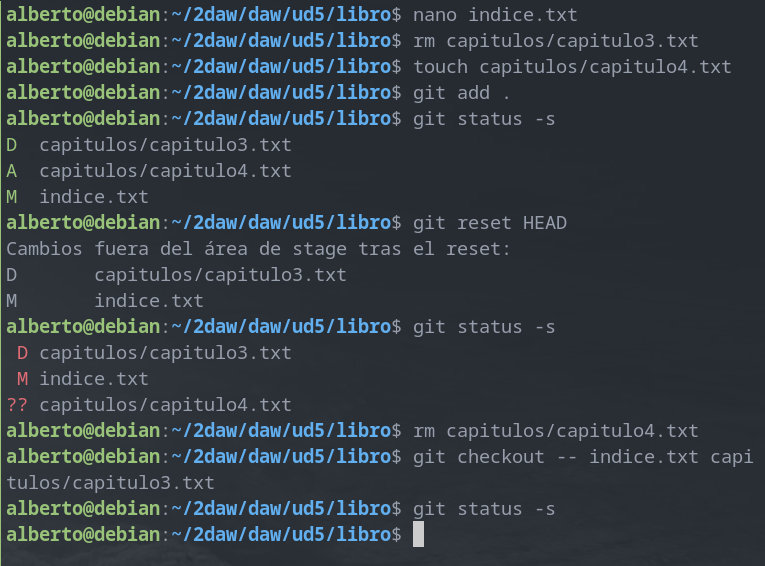

Ejercicios de Git y GitHub
Ejercicios de Git y GitHub (I)
Creación del repositorio y primer commit
Para la realización de esta práctica se ha creado un repositorio remoto en GitHub:
También es necesario inicializar un repositorio en local, indicando la URL (en mi caso uso el enlace SSH) del repositorio remoto como "origen" y renombrando la rama "master" a "main":

A continuación, se realizará un primer commit sencillo en el que se subirá un archivo 'README.md' a la rama 'main' del repositorio remoto:

Ignorar archivos
En ocasiones tendremos en nuestro repositorio local archivos y/o directorios que no queremos añadir a un commit (por ejemplo, archivos que guarden variables de entorno). Para mostrar cómo ignorar archivos, se crearán un archivo y un directorio de ejemplo:
Y para ignorarlos (por ejemplo si ejecutásemos 'git add .'), creamos un archivo '.gitignore' con el siguiente contenido:
privada
privada/*
privado.txt
Tags
Crearemos un nuevo archivo '1.txt' y asignaremos un tag al commit antes de subir los cambios al repositorio remoto:
Cuenta de GitHub
GitHub permite personalizar el perfil de la cuenta (Settings > Public profile). Por ejemplo, podemos poner una foto de perfil:

También es posible mejorar la seguridad de la cuenta activando la autenticación de dos factores (en mi caso, tengo activada la 2FA con la aplicación de autenticación de Google):

Uso social de GitHub
A través de GitHub podemos visitar las cuentas de otras personas. Voy a seguir a dos de mis compañeros de clase:


También crearé una tabla con información de algunos de mis compañeros en el fichero README.md del repositorio DEAW:

Gestión de rama v0.2
Creación de la rama
Creamos una rama con nombre 'v0.2', nos posicionamos sobre ella, creamos un fichero y subimos los cambios al repositorio remoto:

Merge directo
Podemos fusionar el contenido de la rama 'main' con el contenido de 'v0.2'. Como los archivos que comparten las dos ramas tienen el mismo contenido, simplemente se añadirá el archivo '2.txt' de 'v0.2' a 'main':
Merge conflictivo
Si quisiéramos realizar una fusión de ramas pero alguno de los archivos tuviera diferente contenido en cada rama, tendríamos que resolver el conflicto para que la fusión pueda realizarse. Por ejemplo, escribiré "Hola" en el '1.txt' de 'main' y "Adiós" en el mismo archivo pero en la rama 'v0.2':
Al intentar fusionar las ramas saltará un aviso debido al conflicto en el contenido del archivo en las diferentes ramas:
Si abrimos el archivo con un editor de texto se nos mostrará el contenido de ambas ramas:
Resolvemos el conflicto de contenido y confirmamos los cambios con un 'commit'.
Borrar rama
Creamos un tag 'v0.2' y borramos la rama con el mismo nombre:

Listar cambios
Para ver el historial de cambios utilizamos 'git log':
Ejercicios de Git y GitHub (II)
Creación y actualización de repositorios
Ejercicio 1
Para definir el nombre de usuario, email y activar el coloreado de salida ejecutamos:

Para mostrar la configuración ejecutamos:

Ejercicio 2
Creamos un nuevo repositorio y mostramos su contenido:
Ejercicio 3
Comprobamos el estado del repositorio, creamos un fichero 'indice.txt' y comprobamos de nuevo el estado del repositorio:
Añadimos el fichero a la zona de 'stage' y volvemos a comprobar el estado del repositorio:
Ejercicio 4
Confirmamos los cambios y volvemos a comprobar el estado del repositorio:
Ejercicio 5
Modificamos 'indice.txt', mostramos los cambios con respecto a los cambios confirmados anteriormente y confirmamos la nueva versión del archivo:

Ejercicio 6
Ahora mostraremos los cambios sobre la última versión del repositorio al completo. Después modificamos el mensaje de la última confirmación y veremos la última modificación realizada en el repositorio:

Manejo del historial de cambios
Ejercicio 1
Mostramos el historial de cambios:

Añadimos un nuevo directorio y archivo, movemos el nuevo contenido a la zona de 'stage' y confirmamos los cambios:

Volvemos a mostrar el historial de cambios:

Ejercicio 2
Añadimos un nuevo capítulo y mostramos las diferencias entre la última versión y dos versiones anteriores:
Ejercicio 3
Añadimos un nuevo capítulo y mostramos las diferencias entre la primera y última versión del repositorio:
Ejercicio 4
Modificamos el archivo 'indice.txt', confirmamos los cambios y mostramos quién ha realizado los cambios sobre el fichero:

Deshacer cambios
Ejercicio 1
Modificamos 'indice.txt' eliminando contenido y comprobamos el estado del repositorio. Después deshacemos los cambios y volvemos a comprobar el estado del repositorio:

Ejercicio 2
Volvemos a modificar 'indice.txt', añadimos los cambios a la zona de 'stage' y comprobamos el estado del repositorio. Después quitaremos los cambios de la zona de 'stage' y volvemos a comprobar el estado del repositorio. Por último, deshacemos los cambios y comprobamos el estado del repositorio:
Ejercicio 3
En primer lugar:
- Eliminamos la última línea del fichero indice.txt y guardarlo.
- Eliminamos el fichero capitulos/capitulo3.txt.
- Añadir un fichero nuevo capitulos/capitulo4.txt vacío.
- Añadir los cambios a la zona de intercambio temporal.
Tras los cambios, comprobamos el estado del repositorio. Después quitaremos los cambios de la zona de 'stage' y comprobamos el estado. Por último, deshacemos todos los cambios y comprobamos el estado por última vez:

Ejercicio 4
En primer lugar:
- Eliminar la última línea del fichero indice.txt y guardarlo.
- Eliminar el fichero capitulos/capitulo3.txt.
- Añadir los cambios a la zona de intercambio temporal y hacer un commit con el mensaje “Borrado accidental.”
- Comprobar el historial del repositorio.
- Deshacer el último commit pero mantener los cambios anteriores en el directorio de trabajo y la zona de intercambio temporal.
En segundo lugar:
- Comprobar el historial y el estado del repositorio.
- Volver a hacer el commit con el mismo mensaje de antes.
- Deshacer el último commit y los cambios anteriores del directorio de trabajo volviendo a la versión anterior del repositorio.
- Comprobar de nuevo el historial y el estado del repositorio.

Gestión de ramas
Ejercicio 1
Creamos una nueva rama y mostramos todas las ramas del repositorio:

Ejercicio 2
Creamos 'capitulos/capitulo4.txt', confirmamos los cambios y mostramos el historial de todas las ramas:
Ejercicio 3
Nos movemos a la rama 'bibliografia', creamos un archivo de texto con el miso nombre y confirmamos los cambios, luego mostramos el historial con todas las ramas:

Ejercicio 4
Fusionamos 'bibliografia' con 'main', mostramos el historial, eliminamos 'bibliografia' y volvemos a mostrar el historial:
Ejercicio 5
Creamos una nueva rama 'bibliografia', modificamos 'bibliografia.txt' y confirmamos los cambios. Modificamos el mismo archivo en la rama 'main', los confirmamos y fusionamos las ramas resolviendo el conflicto en el fichero:

Mostramos el historial del repositorio:

Repositorios remotos
Ejercicio 1
Creamos un nuevo repositorio en GitHub 'libro-git':

Lo añadimos al repositorio local y mostramos los repositorios remotos:
Ejercicio 2
Subimos los cambios al repositorio remoto con:
git push origin main
Comprobamos el historial de versiones del repositorio remoto: